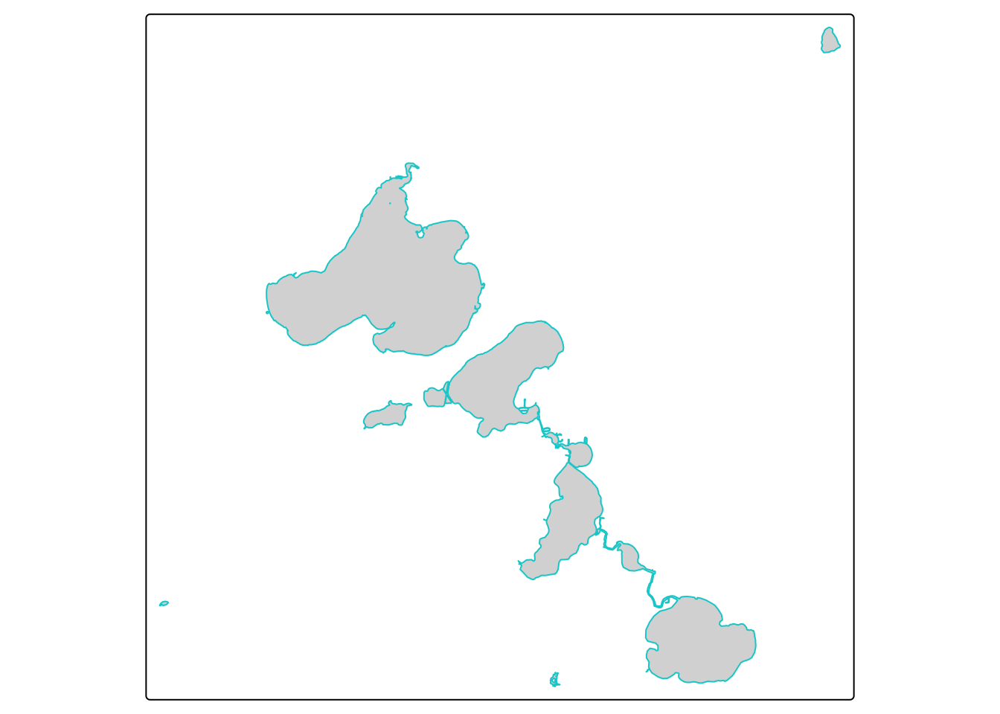
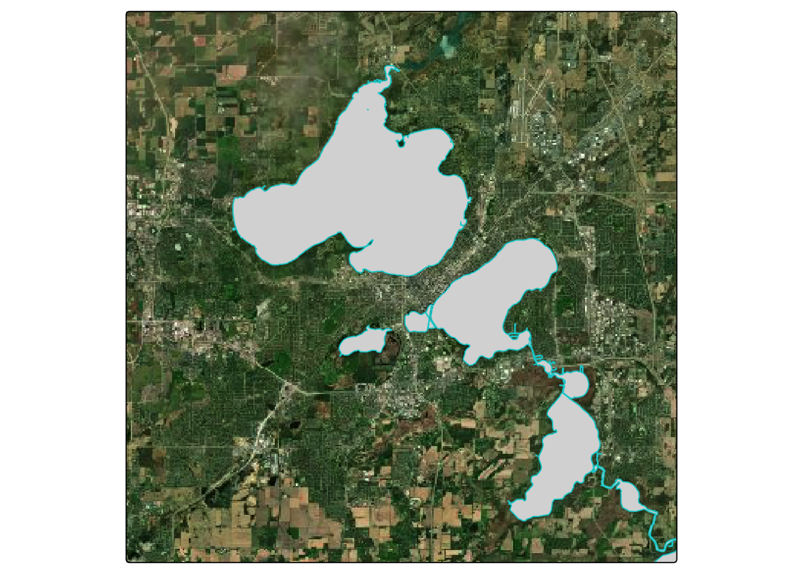
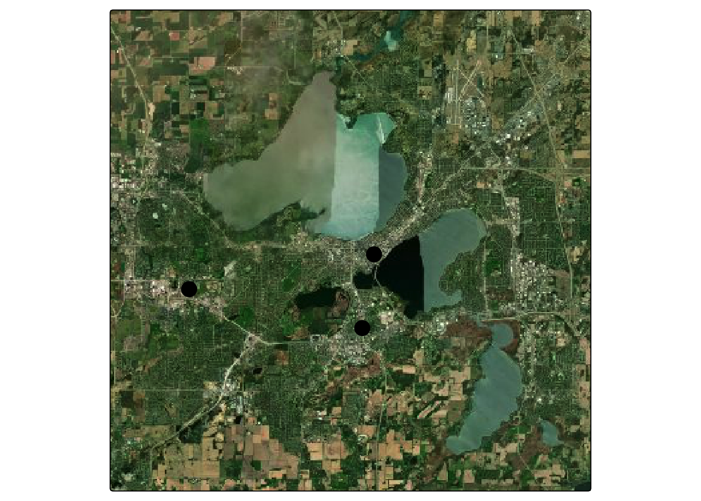
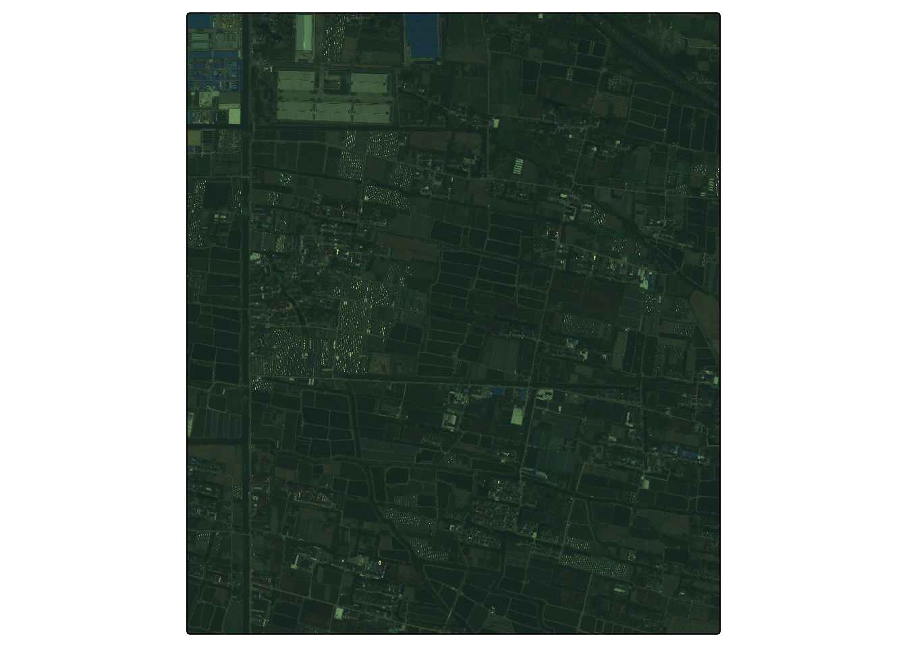
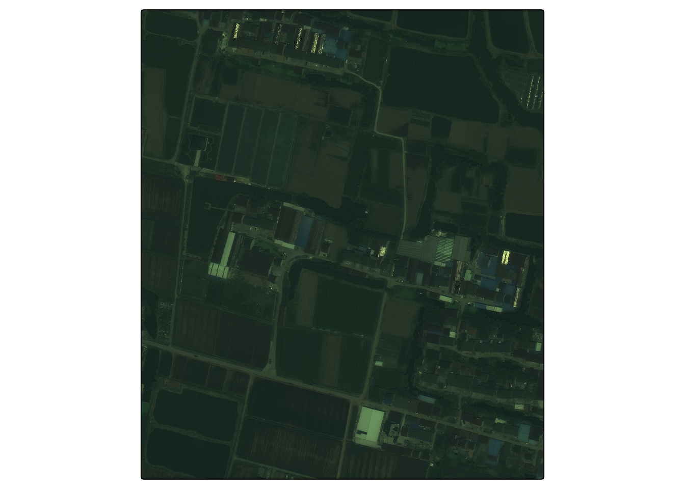
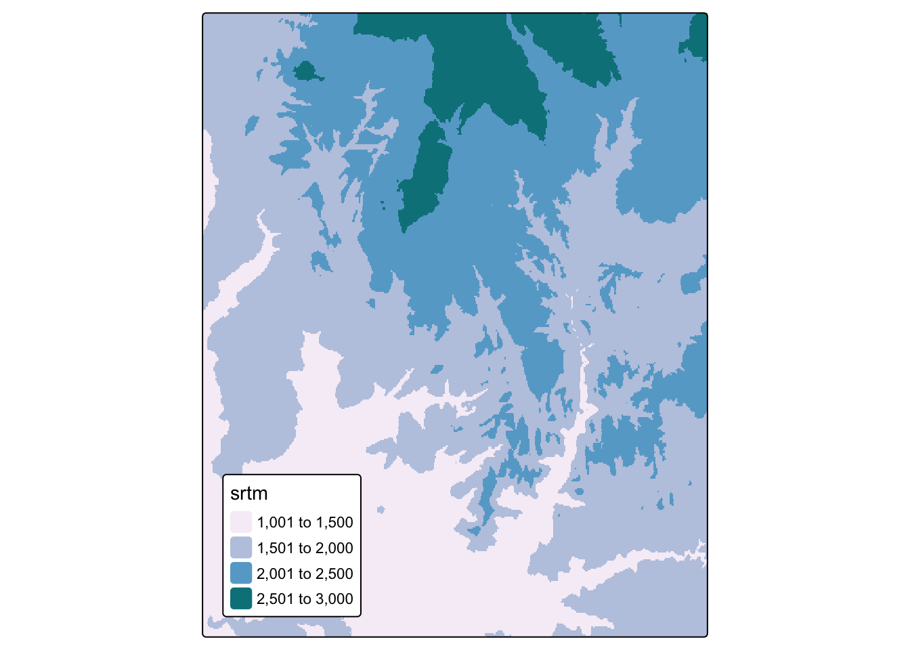

knitr::opts_chunk$set(cache = FALSE, message = FALSE, warning = FALSE, echo = TRUE, eval = TRUE)Spatial Data Formats
An overview of common formats, with illustrative examples.
library(ceramic)
library(raster)
library(sf)
library(terra)
library(tidyverse)
library(tmap)
theme_set(theme_minimal())- Spatial data come in two main formats: vector and raster. We’ll examine them in detail in the next few lectures, but this lecture motivates the high-level distinction and gives a few examples. It also shows how to read and write data to and from these formats.
Vector Data
Vector data formats are used to store geometric information, like the locations of hospitals (points), trajectories of bus routes (lines), or boundaries of counties (polygons). It’s useful to think of the associated data as being spatially enriched data frames, with each row corresponding to one of these geometric features.
Vector data are usually stored in
.geojson,.wkt,.shp, or.topojsonformats. Standard data.frames cannot be used because then important spatial metadata would be lost, like the Coordinate Reference System (to be explained in the fourth lecture this week).In R, these formats can be read using
read_sfin thesfpackage. They can be written using thewrite_sffunction. Here, we’ll read in a vector dataset containing the boundaries of lakes in Madison.::: {.cell}
lakes <- read_sf("https://uwmadison.box.com/shared/static/duqpj0dl3miltku1676es64d5zmygy92.geojson") lakes %>% dplyr::select(id, name, geometry)::: {.cell-output .cell-output-stdout}
Simple feature collection with 10 features and 2 fields Geometry type: POLYGON Dimension: XY Bounding box: xmin: -89.54084 ymin: 42.94762 xmax: -89.17699 ymax: 43.2051 Geodetic CRS: WGS 84 # A tibble: 10 × 3 id name geometry <chr> <chr> <POLYGON [°]> 1 relation/1997948 Lake Monona ((-89.37974 43.0714, -89.37984 43.07132, -89… 2 relation/3361036 Lake Mendota ((-89.46885 43.08266, -89.46864 43.08258, -8… 3 relation/3447583 Upper Mud Lake ((-89.31364 43.04483, -89.31361 43.04464, -8… 4 relation/4090134 Hook Lake ((-89.33198 42.94909, -89.33161 42.94866, -8… 5 relation/4231143 Lake Wingra ((-89.4265 43.05514, -89.4266 43.05511, -89.… 6 relation/6183370 Lake Waubesa ((-89.32949 42.99166, -89.32908 42.99187, -8… 7 relation/7083727 Lake Kegonsa ((-89.2648 42.9818, -89.26399 42.98126, -89.… 8 relation/9668475 Lower Mud Lake ((-89.28011 42.98486, -89.2794 42.98481, -89… 9 way/21415784 Goose Lake ((-89.53957 42.97967, -89.53947 42.97955, -8… 10 way/28721778 Brazee Lake ((-89.18562 43.19529, -89.18533 43.19531, -8…:::
#write_sf(lakes, "output.geojson", driver = "GeoJSON"):::
We’ll discuss plotting in the next lecture, but for a preview, this is how you can visualize the lakes using ggplot2.
::: {.cell}
lakes <- lakes %>% group_by(id) %>% mutate( longitude = st_coordinates(geometry)[1, 1], latitude = st_coordinates(geometry)[1, 2] ) tm_shape(lakes) + tm_polygons(col = "#00ced1")::: {.cell-output-display}  ::: :::
With a little extra effort, we can overlay the features onto public map backgrounds (these are often called “basemaps”).
::: {.cell}
# you can get your own at https://account.mapbox.com/access-tokens/ Sys.setenv(MAPBOX_API_KEY="pk.eyJ1Ijoia3Jpc3JzMTEyOCIsImEiOiJjbDYzdjJzczQya3JzM2Jtb2E0NWU1a3B3In0.Mk4-pmKi_klg3EKfTw-JbQ") basemap <- cc_location(loc= c(-89.401230, 43.073051), buffer = 15e3) tm_shape(basemap) + tm_rgb() + tm_shape(lakes) + tm_polygons(col = "#00ced1")::: {.cell-output-display}  ::: :::
There is a surprising amount of public vector data available online. Using this query1, I’ve downloaded locations of all hospital clinics in Madison.
::: {.cell}
clinics <- read_sf("https://uwmadison.box.com/shared/static/896jdml9mfnmza3vf8bh221h9hlvh70v.geojson") # how would you overlay the names of the clinics, using geom_text? tm_shape(basemap) + tm_rgb() + tm_shape(clinics) + tm_dots(col = "red", size = 1)::: {.cell-output-display}  ::: :::
Using this query, I’ve downloaded all the bus routes.
::: {.cell}
bus <- read_sf("https://uwmadison.box.com/shared/static/5neu1mpuh8esmb1q3j9celu73jy1rj2i.geojson") tm_shape(basemap) + tm_rgb() + tm_shape(bus) + tm_lines(col = "#bc7ab3", size = 1)::: {.cell-output-display}
 ::: :::
::: :::For the boundaries of the lakes above, I used this query.
Many organizations prepare geojson data themselves and make it publicly available; e.g., the boundaries of rivers or glaciers. Don’t worry about how to visualize these data at this point — I just want to give some motivating examples.
Raster Data
Raster data give a measurement along a spatial grid. You can think of them as spatially enriched matrices, where the metadata says where on the earth each entry of the matrix is associated with.
Raster data are often stored in
tiffformat. They can be read in using therastfunction in theterralibrary, and can be written usingwriteRaster.::: {.cell}
shanghai <- rast("https://uwmadison.box.com/shared/static/u4na56w3r4eqg232k2ma3eqbvehfiaoq.tif") #writeRaster(shanghai, "output.tiff", driver = "GeoTIFF"):::
Some of the most common types of public raster data are satellite images or derived measurements, like elevation maps. For example, the code below shows an image of a neighborhood outside Shanghai.
tm_shape(shanghai / 1636 * 255) + # rescale the max value to 255
tm_rgb()
|---------|---------|---------|---------|
=========================================
|---------|---------|---------|---------|
=========================================
|---------|---------|---------|---------|
=========================================
|---------|---------|---------|---------|
=========================================

There’s actually quite a bit of information in this image. We can zoom in…
bbox <- ext(121.66, 121.665, 30.963, 30.968)
shanghai_ <- crop(shanghai, bbox)
tm_shape(shanghai_ / 1636 * 255) +
tm_rgb()
Here are is data on elevation in Zion national park.
f <- system.file("raster/srtm.tif", package = "spDataLarge")
zion <- rast(f)
tm_shape(zion) +
tm_raster(palette = "PuBuGn") +
tm_layout(legend.position = c("left", "bottom"))
Installation
- A note about R packages: for historical reasons, spatial data libraries in R reference a few command line programs, like
gdalandproj. Since these command line programs are not themselves a part of R, they need to be installed before the corresponding R packages. The process will differ from operating system to operating system, and the experience can be frustrating, especially when the R packages don’t recognize the underlying system installation. I recommend following the instructions on this page and reaching out early if you have any issues.
Footnotes
It can be constructed easily using the wizard↩︎